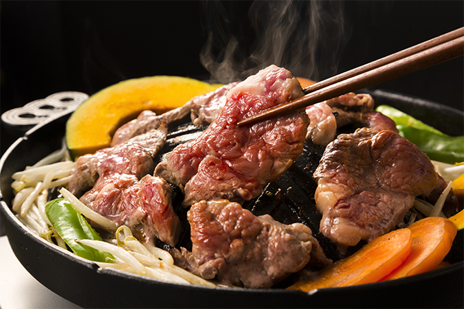
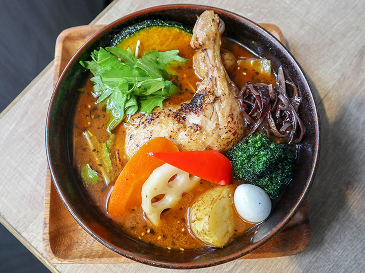
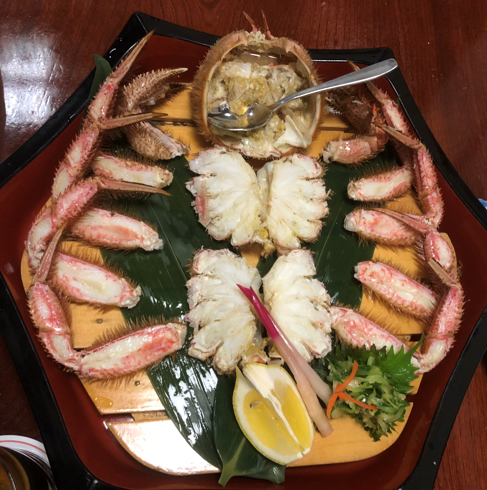
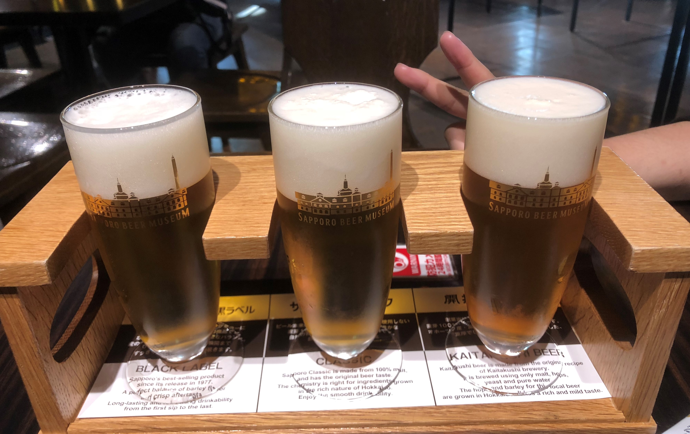
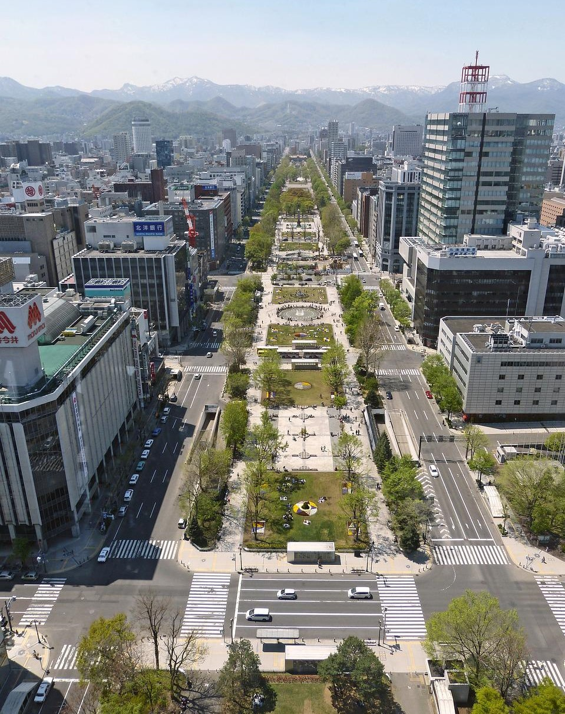
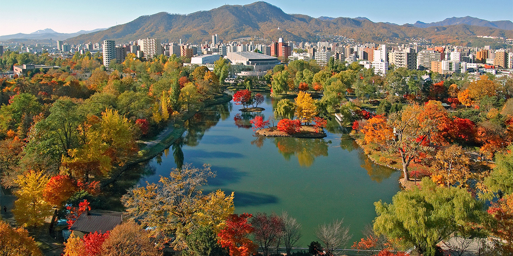
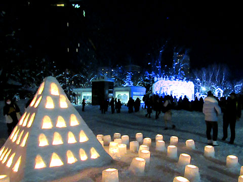
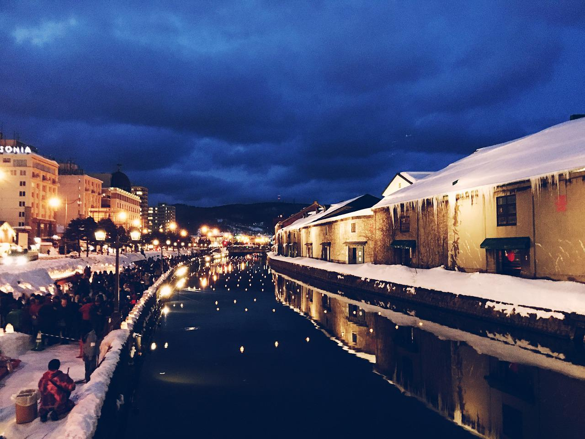

- 먹을거리
- 관광지
- 주변도시
카이센동

카이센동이라 불리는 해물 덮밥은 밥 위에 싱싱한 해산물을 올린 덮밥이다. 위에 올린 토핑 종류는 다양하다. 연어, 게 다리, 연어알, 가리비, 성게알 등 자신의 취향에 따라 골라먹을 수 있는 재미가 있다.
"개인적으로 성게알(우니 うに)을 강추한다."
징기스칸
징기스칸은 둥근 헬멧 형태의 철판에 양고기를 양배추, 콩나물 등과 같은 채소와 구워낸 요리다. 기호에 따라 양념에 살짝 찍어먹으면 된다.
수프 카레
일본 풍의 카레와 진한 향을 내는 수프를 섞어 밥과 같이 제공하는 요리. 신선하고 향이 좋은 허브, 각종 채소들이 들어가 건강식으로 즐길 수 있는 요리다. 매운 맛에서부터 순한 맛까지 자신의 취향대로 선택해 주문해 먹을 수 있다.
털게 요리
삿포로의 특산품인 털게는 탕, 찜, 등 다양한 방법으로 요리해 먹는다. 잘익은 등딱지에 밥을 비벼 먹는 그 맛이 일품이다.
삿포로 맥주공장


- 

⟨ ⟩
삿포로 맥주의 모든 것, 일본 유일의 맥주 박물관
1987년 개관 이후 꾸준히 사랑받고 있는 곳. 맥주 제조 과정, 시대별 변천사 등 맥주에 대한 다양한 궁금증을 해소할 수 있다. 유료 맥주 시음, 견학 등 직접 참여해볼 수 있는 이벤트도 마련돼 있다. 전시관을 천천히 구경한 후 라운지에서 마시는 맥주는 꿀맛!
오도리공원


- 
⟨ ⟩
다양한 축제와 꽃이 가득한 삿포로 대표 공원
삿포로 중심부에 위치해 있는 도심 공원으로 동서 방향 1.5km에 걸쳐 긴 산책로가 조성돼 있다. 뻥뚤린 시야너머로는 삿포로 랜드마크인 TV 타워가 보인다. 또한 오도리 공원에서는 요사코이 소란축제, 눈 축제나 일루미네이션 등, 계절마다 다양한 이벤트가 개최되는 홋카이도 제일의 회장이다.
나카지마 공원


- 
- 
⟨ ⟩
풍경이 아름다운 공원
19세기에 조성된 공원으로, 우거진 녹음과 작은 호수들이 어우러진 아름다운 풍경을 볼 수 있는 곳이다. 또한 사계절 내내 다양한 축제가 열리는 장소이다. 특히 눈을 이용해 다양한 조형물을 만들어 볼 수 있는 겨울 축제 '유키 아카리 인 나카지마 공원' 어린이들뿐만 아니라 연인과 가족 등 모든 층에게 인기있는 축제로 유명하다.
오타루


- 
⟨ ⟩
삿포로와 가까운 항구도시
1872년 홋카이도 최초로 부두를 건설하고 1880년에는 삿포로와 처음으로 철도를 개통했다. 항구의 운하를 중심으로 도시가 발달한 것이 특징. 영화 '러브레터'의 촬영지로도 유명하다.
후라노&비에이
천혜 자연 경관이 아름다운 후라노&비에이
여름에는 라벤더 향기에 흠뻑 취하고 겨울에는 눈의 아름다움에 반하게 되는곳. 삿포로에서 하루 일정으로 다녀올 수 있다.